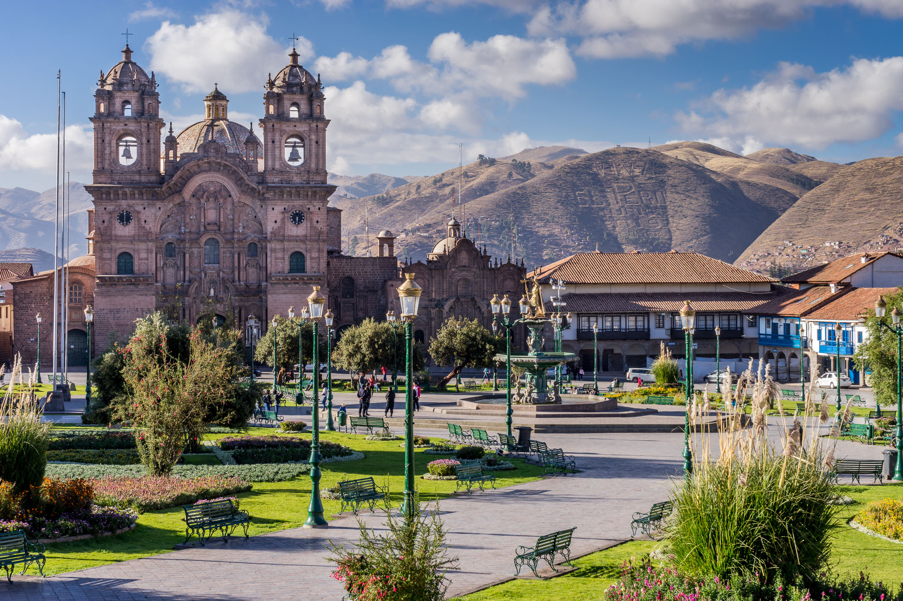
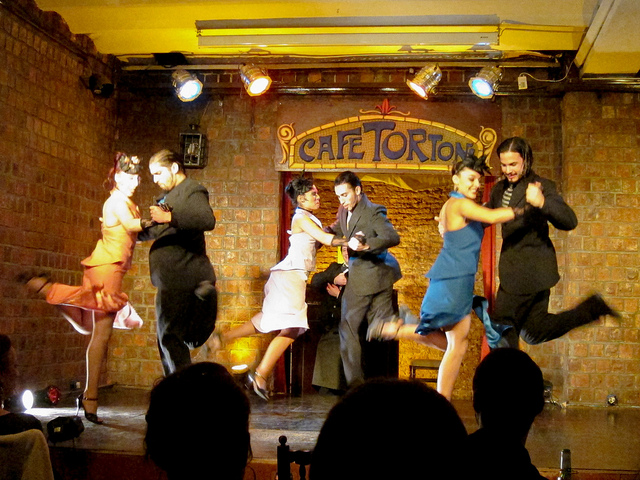

Peru
Peru is as complex as its most intricate and exquisite weavings. Festivals mark ancient rites, the urban vanguard beams innovation and nature brims with splendid diversity. Life is a Carnival Welcome to a place of mythical beliefs where ancient pageants unwind to the tune of booming brass bands. Peru's rich cultural heritage is never more real and visceral than when you are immersed streetside in the swirling madness of a festival. Deities of old are reincarnated as Christian saints, pilgrims climb mountains in the dead of night and icons are paraded through crowded plazas as once were the mummies of Inca rulers. History is potent here and still pulsing, and there is no better way to experience it. Oh, Adventure Giant sand dunes, chiseled peaks and Pacific breaks a few heartbeats away from the capital’s rush-hour traffic: from downtown Lima to smack-dab nowhere, this vast country translates to paradise for the active traveler. All the usual suspects – rafting, paragliding, zip lines and bike trails – are present. Spot scarlet macaws in the Amazon or catch the sunset over the dusty remnants of an ancient civilization. Take this big place in small bites and don't rush. Delays happen. Festivals can swallow you whole for days. And that’s when you realize: in Peru the adventure usually lies in getting there. Pleasure & the Palate One existential question haunts all Peruvians: what to eat? Ceviche with slivers of fiery chili and corn, slow-simmered stews, velvety Amazonian chocolate – in the capital of Latin cooking, the choices dazzle. Great geographic and cultural diversity has brought ingredients ranging from highland tubers to tropical jungle fruits to a complex cuisine of Spanish, indigenous, African and Asian influence. The truth is, fusion existed here long before it came with airs. Explore the bounty of food markets. Sample grilled anticuchos (beef skewers) on the street corners and splurge a little on exquisite novoandina (Peruvian nouvelle cuisine). All Things Ancient Visitors pilgrimage to the glorious Inca citadel of Machu Picchu, yet this feted site is just a flash in a 5000-year history of peoples. Explore the dusted remnants of Chan Chan, the largest pre-Columbian ruins in all the Americas. Fly over the puzzling geoglyphs etched into the arid earth at Nazca. Or venture into the rugged wilds that hem the stalwart fortress of Kuelap. Lima’s great museums reveal in full detail the sophistication, skill and passion of these lost civilizations. Visit remote communities and see how old ways live on. Immerse yourself, and you will leave Peru a little closer to the past. Why I Love Peru By Carolyn McCarthy, Writer For me, Peru is the molten core of South America, a distillation of the oldest traditions and the finest building, weaving and art made by the most sophisticated cultures on the continent. In Peru the wildest landscapes – from frozen Andean peaks to the deep Amazon – help us re-forge our connection to the natural world. It is also a cultural stew, where diverse peoples live side by side, negotiating modern life with humor and aplomb. Beyond that, the cuisine alone makes it worth the trip. Every return is rich and surprising. From Lonely Planet Website

Costa Rica
All trails lead to waterfalls, misty crater lakes or jungle-fringed, deserted beaches. Explored by horseback, foot or kayak, Costa Rica is a tropical choose-your-own-adventure land. Outdoor Adventures Rainforest hikes and brisk high-altitude trails, rushing white-water rapids and world-class surfing: Costa Rica offers a dizzying suite of outdoor adventures in every shape and size – from the squeal-inducing rush of a canopy zip line to a sun-dazed afternoon at the beach. National parks allow visitors to glimpse life in the tropical rainforest and cloud forest, simmering volcanoes offer otherworldly vistas, and reliable surf breaks are suited to beginners and experts alike. Can’t decide? Don’t worry, you won’t have to. Given the country’s diminutive size, it’s possible to plan a relatively short trip that includes it all. The Pure Life And then there are the people. Costa Ricans, or Ticos as they prefer to call themselves, are proud of their little slice of paradise, welcoming guests to sink into the easygoing rhythms of the pura vida (pure life). The greeting, farewell, catchy motto and enduring mantra gets to the heart of Costa Rica’s appeal – its simple yet profound ability to let people relax and enjoy their time. With the highest quality of life in Central America, all the perfect waves, perfect sunsets and perfect beaches seem like the pura vida indeed. The Peaceful Soul of Central America As the eco- and adventure-tourism capital of Central America, Costa Rica has a worthy place in the cubicle daydreams of travelers around the world. With world-class infrastructure, visionary sustainability initiatives and no standing army since 1948 (when the country redirected its defense funds toward education, healthcare and the environment), Costa Rica is a peaceful green jewel of the region. Taking into account that more than a fourth of the land enjoys some form of environmental protection and there’s greater biodiversity here than in the USA and Europe combined, it’s a place that earns the superlatives. Why I Love Costa Rica By Ashley Harrell, Writer The night I moved to Costa an expat in a bar congratulated me. ‘The best part,’ she said, ‘is you can do anything here.’ She wasn’t talking about traveling the entire country, undertaking extreme adventures or attending a Christmas party in a bikini (but yeah, done all that). She meant that people here have the time, freedom and permission to truly live. Want to sleep in a shack and surf constantly? Do it. Want to rescue baby sloths? Somebody has to. I wanted to travel, study wildlife, write and feel alive. Now I do. Pura vida. The Wild Life Such wildlife abounds in Costa Rica as to seem almost cartoonish: keel-billed toucans ogle you from treetops and scarlet macaws raucously announce their flight paths. A keen eye will discern a sloth on a branch or the eyes and snout of a caiman breaking the surface of a mangrove swamp, while alert ears will catch rustling leaves signaling a troop of white-faced capuchins or the haunting call of a howler monkey. Blue morpho butterflies flit amid orchid-festooned trees, while colorful tropical fish, sharks, rays, dolphins and whales thrive offshore – all as if in a conservationist’s dream. From Lonely Planet Website

Argentina
It's apparent why Argentina has long held travelers in awe: tango, beef, gauchos, fútbol, Patagonia, the Andes. The classics alone make a formidable wanderlust cocktail. Natural Wonders From mighty Iguazú Falls in the subtropical north to the thunderous, crackling advance of the Glaciar Perito Moreno in the south, Argentina is a vast natural wonderland. The country boasts some of the Andes’ highest peaks. It’s home to rich wetlands that rival Brazil’s famous Pantanal, mountains painted in rustic colors, deserts dotted with cacti, massive ice fields and arid steppes in Patagonia, cool lichen-clad Valdivian forests, Andean salt flats, a spectacular Lake District, penguins, flamingos, capybaras and more. All are stunning sights and adventures just waiting to be experienced. Argentine Culture Tango is possibly Argentina’s greatest contribution to the outside world, a steamy dance that’s been described as ‘making love in the vertical position.’ And what about fútbol (soccer)? Argentines are passionately devoted to this sport and, if you're a fan, experiencing a live match should definitely be on your itinerary. Add a distinctive Argentine take on literature, cinema, music and arts, and you have a rich, edgy culture – part Latin American and part European – that you can’t help but fall in love with. City Life Arriving in Buenos Aires is like jumping aboard a moving train. Outside the taxi window, a blurred mosaic of a modern metropolis whizzes by, and then the street life appears – the cafes, the purple jacaranda flowers draped over the sidewalks (in spring!), and porteños (residents of Buenos Aires) in stylish clothing, walking purposefully past handsome early-20th-century stone facades. And it’s not just Buenos Aires that’s a stunner – Córdoba, Salta, Mendoza and Bariloche each have their unique personalities and unforgettable attractions, so don't miss them. Food & Drink Satisfying that carnal craving for juicy steaks isn’t hard to do in the land that has perfected grilling wonderfully flavorful sides of beef. Parrillas (steak restaurants) are everywhere and will offer up any cut you can imagine. And if you're a fan of pizza and pasta, these Italian staples are ubiquitous as well. But there's more – in Buenos Aires you can experience a huge variety of ethnic cuisine, from Southeast Asian and Middle Eastern to Scandinavian. Down it all with that famous Argentine wine, and you'll be struggling to maintain your waistline. Why I Love Argentina By Sandra Bao, Author Argentina is my country – this is where I was born and raised, where I lived until my family emigrated to the USA. It's changed drastically since I was a little girl, but what I love most about Argentina is its people. They've nurtured their creativity, adaptability and perseverance, through good and very bad times, all while maintaining their traditions, humor and pride. I'm always happy to go back to this amazing place and its inhabitants – it's been a real privilege. From Lonely Planet Website